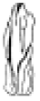
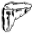

조경기능사 (2005-01-30 기출문제)
1과목: 조경일반
1. 정원수의 60%까지를 소나무로 배치하거나 향나무를 심어 전체를 하나의 힘찬 형태나 색채 또는 선으로 통일시켰을 때 나타나는 아름다움을 무엇이라하는가?
- 단순미
- 통일미
- 점층미
- 균형미
(정답률: 90%)

2. 백제의 노자공이 일본에 건너가 전파한 축산의 형태는?
- 수미산
- 삼신산
- 봉황산
- 무산십이봉
(정답률: 87%)
3. 다음은 조경계획 과정을 나열한 것이다. 가장 바른 순서로 된 것은?
- 기초조사 - 식재계획 - 동선계획 - 터가르기
- 기초조사 - 터가르기 - 동선계획 - 식재계획
- 기초조사 - 동선계획 - 식재계획 - 터가르기
- 기초조사 - 동선계획 - 터가르기 - 식재계획
(정답률: 66%)
4. 다음 중 일시적 경관에 해당되는 것은?
- 돌
- 모래
- 안개
- 자갈
(정답률: 96%)
5. 다음 정원시설 중 우리나라 고유의 것이 아닌 것은?
- 취병(생울타리)
- 담장
- 벽천
- 연못
(정답률: 88%)
6. 사적지 조경의 식재계획 내용 중 적합하지 않는 것은?
- 민가의 안마당에는 교목류를 식재한다.
- 사찰 회랑 경내에는 나무를 심지 않는다.
- 성곽 가까이에는 교목을 심지 않는다.
- 궁이나 절의 건물터는 잔디를 식재한다.
(정답률: 71%)
7. 이탈리아의 노단건축식(Terrace Dominant architectural stule)정원 양식이 생긴 요인에 해당되는 것은?
- 과학기술이 발달했기 때문에
- 비가 적게오기 때문에
- 돌이 많이 나오기 때문에
- 지형의 경사가 심하기 때문에
(정답률: 93%)
8. 사적지 종류별 조경계획 중 올바르지 않는 것은?
- 건축물 가까이에는 교목류를 식재하지 않는다.
- 민가의 안마당에는 유실수를 주로 식재한다.
- 성곽 가까이에는 교목을 심지 않는다.
- 묘역 안에는 큰 나무를 심지 않는다.
(정답률: 67%)
9. 백제와 신라의 정원에 영향을 주었던 사상으로 가장 적당한 것은?
- 음양오행사상
- 풍수지리사상
- 신선사상
- 유교사상
(정답률: 78%)
10. 미국에서 재정적으로 성공하였으며 도시공원의 효시로 국립 공원운동의 계기를 마련한 공원은?
- 센트럴파크
- 세인트제임스파크
- 뷔테쇼몽 공원
- 프랭크린파크
(정답률: 95%)
11. 다음 중 중정(patio)식 정원에 가장 많이 쓰이는 것은?
- 폭포
- 색채타일
- 울창한 수목
- 가산(마운딩)
(정답률: 84%)
12. 다음 중 배치계획시 방향의 고려사항과 관련이 없는 시설은?
- 골프장의 각 코스
- 실외 야구장
- 축구장
- 실내 테니스장
(정답률: 90%)
13. 주택단지 정원의 설계에 관한 사항으로 알맞은 것은?
- 녹지율은 50% 이상이 바람직 하다.
- 건물 가까이에 상록성 교목을 식재한다.
- 단지의 외곽부에는 차폐 및 완충식재를 한다.
- 공간 효율을 높이기 위해 차도와 보도를 인접 및 교차 시킨다.
(정답률: 75%)
14. 조경프로젝트의 수행단계 중 식생의 이용 및 시설물의 효율적 이용 유지, 보수 등 전체적인 것을 다루는 단계는?
- 조경관리
- 조경설계
- 조경계획
- 조경시공
(정답률: 77%)
15. 겨울철 좋은 생활환경과 나무의 생육을 위해 최소 얼마 정도의 광선이 필요한가?
- 2시간 정도
- 4시간 정도
- 6시간 정도
- 10시간 정도
(정답률: 77%)
2과목: 조경재료
16. 방풍림을 설치하려고 할 때 가장 알맞는 수종은 어느 것인가?
- 구실잣밤나무
- 자작나무
- 버드나무
- 사시나무
(정답률: 65%)
17. 자연석의 모양이 사석인 것은?


(정답률: 78%)
18. 다음 중 폴리에틸렌관의 설명으로 틀리는 것은?
- 가볍고 충격에 견디는 힘이 크다.
- 시공이 용이하다.
- 유연성이 적다.
- 경제적이다.
(정답률: 73%)
19. 빨간색의 열매를 볼 수 없는 수목은?
- 은행나무
- 남천
- 피라칸사
- 자금우
(정답률: 93%)
20. 다음 중 단풍의 색깔이 붉은 색인 것으로 짝지은 것은?
- 화살나무, 담쟁이 덩굴
- 단풍나무, 상수리나무
- 은행나무, 마가목
- 계수나무, 낙엽송
(정답률: 76%)
21. 여름철에 꽃을 볼 수 있는 나무로 짝지어진 것은?
- 금목서, 백목련
- 배롱나무, 능소화
- 병꽃나무, 매화
- 미선나무, 수수꽃다리
(정답률: 84%)
22. 천연석을 잘게 분쇄하여 색소와 시멘트를 혼합 연마한 것으로 부드러운 질감을 느끼게 하지만 미끄러운 결점이 있는 보차도용 콘크리이트 제품은?
- 경계블록
- 보도블록
- 인조석보도블록
- 강력압력보도블록
(정답률: 67%)
23. 앞면은 정사각형 또는 직사각형으로 1개의 무게는 보통 70 ∼ 100㎏으로, 주로 옹벽 등의 쌓기용으로 메쌓기나 찰쌓기 등에 사용되는 돌은?
- 마름돌
- 견치돌
- 깬돌
- 호박돌
(정답률: 72%)
24. 연못가나 습지 등에 가장 잘 견디는 수목은?
- 낙우송
- 향나무
- 해송
- 가중나무
(정답률: 64%)
25. 다음 중 초류종자 살포(종자 뿜어붙이기)와 관계 없는 것은?
- 종자
- 피복제(파이버)
- 비료
- 농약
(정답률: 74%)
26. 물 재료를 정적인 이용면으로 시설한 것은?
- 분수
- 폭포
- 벽천
- 풀(Pool)
(정답률: 80%)
27. 수목 굴취시 뿌리분을 감는데 사용하며, 포트(pot)역할을 하여 잔뿌리 형성에 도움을 주는 환경친화적인 재료는?
- 새끼
- 철선
- 녹화마대
- 고무밴드
(정답률: 83%)
28. 우리나라의 목재가 건조된 상태일 때 기건함수율로 가장 적당한 것은?
- 약 5%
- 약 15%
- 약 25%
- 약 35%
(정답률: 81%)
29. 산성토양에서 가장 잘 견디는 나무는?
- 조팝나무
- 진달래
- 낙우송
- 회양목
(정답률: 50%)
30. 상록 활엽수이며, 교목인 수종으로 가장 적당한 것은?
- 눈주목
- 녹나무
- 히말라야시이다
- 치자나무
(정답률: 63%)
31. 재래종 잔디의 특성이 아닌 것은?
- 양지를 좋아한다.
- 병해에 강하다.
- 뗏장으로 번식한다.
- 자주 깎아 주어야 한다.
(정답률: 64%)
32. C.C.A 방부제의 성분이 아닌 것은?
- 크롬
- 구리
- 아연
- 비소
(정답률: 73%)
33. 공해 중 아황산가스(SO2)에 의한 수목의 피해를 설명한 것으로 가장 알맞은 것은?
- 한 낮이나 생육이 왕성한 봄, 여름에 피해를 입기 쉽다.
- 밤이나 가을에 피해가 심하다.
- 공기 중의 습도가 낮을 때 피해가 심하다.
- 겨울에 피해가 심하다.
(정답률: 73%)
34. 다음 중 화성암이 아닌 것은?
- 대리석
- 화강암
- 안산암
- 섬록암
(정답률: 77%)
35. 조경재료 중 생물 재료의 특성이 아닌 것은?
- 연속성
- 불변성
- 조화성
- 다양성
(정답률: 91%)
3과목: 조경 시공 및 관리
36. 다음 장비 중 조경공사의 운반용 기계가 아닌 것은?
- 덤프 트럭(dump truck)
- 크레인(crane)
- 백 호우(back hoe)
- 지게차(forklift)
(정답률: 73%)
37. 폭이 50cm, 높이가 60cm, 길이가 10m 인 콘크리트 기초에 소요되는 재료의 양은? (단, 배합비는 1:3:6이고, 자갈은 0.90m3/m3, 모래는 0.45m3/m3, 시멘트는 226kg/m3이다.)
- 시멘트 678 kg, 모래 1.35m3, 자갈 2.7m3
- 시멘트 678 kg, 모래 2.7m3, 자갈 1.35m3
- 시멘트 2.7 kg, 모래 1.35m3, 자갈 6.78m3
- 시멘트 1.35 kg, 모래 6.78m3, 자갈 2.7m3
(정답률: 54%)
38. 다음 중 가로수 식재를 설명한 것 중에서 옳지 않는 것은?
- 일반적으로 가로수 식재는 도로변에 교목을 줄지어 심는 것을 말한다.
- 가로수 식재 형식은 일정 간격으로 같은 크기의 같은 나무를 일렬 또는 이렬로 식재한다.
- 식재 간격은 나무의 종류나 식재목적, 식재지의 환경에 따라 다르나 일반적으로 4∼10m로 하는데, 5m 간격으로 심는 경우가 많다.
- 가로수는 보도의 나비가 2.5m 이상 되어야 식재할 수 있으며, 건물로부터는 5.0m 이상 떨어져야 그 나무의 고유한 수형을 나타낼 수 있다.
(정답률: 53%)
39. 거름을 줄 때 지켜야 할 점으로 잘못된 것은?
- 흙이 몹시 건조하면 맑은 물로 땅을 추기고 거름주기를 한다.
- 두엄, 퇴비 등으로 거름을 줄 때는 다소 덜 썩은 것을 선택하여 실시한다.
- 속효성 거름 주기는 7월말 이내에 끝낸다.
- 거름을 주고난 다음에는 흙으로 덮어 정리 작업을 실시한다.
(정답률: 78%)
40. 시설물 관리를 위한 페인트 칠하기의 방법으로 적당치 못한 것은?
- 목재의 바탕칠을 할 때는 먼저 표면상태 및 건조 상태를 확인해야 한다.
- 철재의 바탕칠을 할 때에는 불순물을 제거한 후 바로 페인트 칠을 하면 된다.
- 목재의 갈라진 구멍, 홈, 틈은 퍼티로 땜질하며 24시간 후 초벌칠을 한다.
- 콘크리이트, 모르타르면의 틈은 석고로 땜질하고 유성 또는 수성 페인트를 칠한다.
(정답률: 82%)
41. 다음 수종 중 빗자루병에 잘 걸리는 나무는?
- 향나무
- 소나무
- 벚나무
- 목련
(정답률: 75%)
42. 향나무, 주목 등을 일정한 모양으로 유지하기 위하여 전정을 하여 형태를 다듬었다. 가지 다듬기는 어떤 목적을 위한 작업인가?
- 생장조장을 돕는 가지 다듬기
- 생장을 억제하는 가지 다듬기
- 세력을 갱신하는 가지 다듬기
- 생리조정을 위한 가지 다듬기
(정답률: 72%)
43. 한국적인 색채가 가장 짙은 정원양식이 발생한 시대는?
- 조선시대
- 고려시대
- 백제시대
- 신라전성기
(정답률: 88%)
44. 일반적인 성인의 보폭으로 디딤돌을 놓을 때 좋은 보행감을 느낄 수 있는 디딤돌과 디딤돌사이의 중심간 길이로 가장 적당한 것은?
- 20cm 정도
- 40cm 정도
- 50cm 정도
- 80cm 정도
(정답률: 66%)
45. 모과나무의 붉은별무늬병의 여름포자·겨울포자 세대(중간기주)의 식물은?
- 잣나무
- 향나무
- 배나무
- 느티나무
(정답률: 63%)
46. 우리나라 들잔디의 종자처리 방법으로 가장 적합한 것은?
- KOH 20‾5% 용액에 10‾5분간 처리 후 파종한다.
- KOH 20‾5% 용액에 20‾0분간 처리 후 파종한다.
- KOH 20‾5% 용액에 30‾5분간 처리 후 파종한다.
- KOH 20‾5% 용액에 1시간 처리 후 파종한다.
(정답률: 57%)
47. 신체장애자를 위한 경사로(RAMP)를 만들 때 가장 적당한 경사는?
- 8%이하
- 10%이하
- 12%이하
- 15%이하
(정답률: 73%)
48. 굳지 않은 모르타르나 콘크리트에서 물이 분리되어 위로 올라오는 현상은?
- 워커빌리티(workability)
- 블리딩(bleeding)
- 피니셔빌리티(finishability)
- 레이턴스(laitance)
(정답률: 75%)
49. 자연석놓기 중에서 경관석놓기를 설명한 것 중 틀린 것은?
- 시선이 집중되는 곳이나 중요한 자리에 한두개 또는 몇개를 짜임새 있게 놓고 감상한다.
- 경관석을 놓았을 때 보는 사람으로 하여금 아름다움을 느끼게 멋과 기풍이 있어야 한다.
- 경관석짜기의 기본은 주석(중심석)과 부석을 바꾸어 놓고 4,6,8...등 균형감 있게 짝수로 놓아야 자연스럽게 보인다.
- 경관석을 다 놓은 후에는 그 주변에 알맞는 관목이나 초화류를 식재하여 조화롭고 돋보이는 경관이 되도록 한다.
(정답률: 91%)
50. 모래밭 조성에 관한 설명이다. 가장 옳지 않는 것은?
- 하루에 4 - 5시간의 햇볕이 쬐고 통풍이 잘되는 곳에 설치한다.
- 모래밭은 가능한 휴게시설에서 멀리 배치한다.
- 모래밭의 깊이는 놀이의 안전을 고려하여 30cm 이상으로 한다.
- 가장자리는 방부처리한 목재를 사용하여 지표보다 높게 모래막이 시설을 해준다.
(정답률: 81%)
51. 다음 선의 종류와 선긋기의 내용이 잘못 짝지어진 것은?
- 가는 실선 - 수목 인출선
- 파선 - 보이지 않는 물체
- 일점쇄선 - 지역 구분선
- 이점쇄선 - 물체의 중심선
(정답률: 75%)
52. 설계안이 완공되었을 경우를 가정하여 설계 내용을 실제 눈에 보이는 대로 절단한 면을 그린 그림은?
- 평면도
- 조감도
- 투시도
- 상세도
(정답률: 65%)
53. 전정시기와 횟수에 관한 설명 중 올바르지 않은 것은?
- 침엽수는 10-11월경이나 2-3월에 한 번 실시한다.
- 상록활엽수는 5-6월과 9-10월경 두 번 실시한다.
- 낙엽수는 일반적으로 11-3월 및 7-8월경에 각각 한 번 또는 두 번 전정한다.
- 관목류는 일반적으로 계절이 변할 때마다 전정하는 것이 좋다.
(정답률: 74%)
54. 흙은 같은 양이라 하더라도 자연상태(N)와 흐트러진 상태(S), 인공적으로 다져진 상태(H)에 따라 각각 그 부피가 달라진다. 자연상태의 흙의 부피(N)를 1.0으로 할 경우 부피가 많은 순서로 적당한 것은?
- N > S > H
- N > H > S
- S > N > H
- S > H > N
(정답률: 75%)
55. 수목을 굴취한 이후에 옮겨심기 순서의 설명이 가장 옳은 것은?
- 구덩이 파기 → 수목넣기 →2/3 정도 흙 채우기 → 물 부어 막대기 다지기 → 나머지 흙 채우기
- 구덩이 파기 → 수목넣기 → 물붓기 →2/3 정도 흙 채우기 → 다지기 → 나머지 흙 채우기
- 구덩이 파기 → 2/3 정도 흙 채우기 → 수목넣기 → 물 부어 다지기 → 나머지 흙 채우기
- 구덩이 파기 → 물붓기 → 수목넣기 → 나머지 흙 채우기
(정답률: 83%)
56. 다음 제초작업에 관한 설명 중 틀린 것은?
- 농약 제초제는 사용범위가 좁고, 제초 효과가 오랫동안 지속되지 않는다.
- 제초 작업시 잡초의 뿌리 및 지하경을 완전히 제거해야 한다.
- 심한 모래땅이나 척박한 토양에서는 약해가 우려되므로 제초제를 사용하지 않는다.
- 인력 제초는 비효율적이나 약해의 우려가 없어 안전한 방법이다.
(정답률: 53%)
57. 다음 중 시공관리 내용이 아닌 것은?
- 공정관리
- 품질관리
- 원가관리
- 하자관리
(정답률: 74%)
58. 수피가 얇은 나무에서 수피가 타는 것을 방지 하기위하여 실시해야 할 작업은?
- 수관주사주입
- 낙엽깔기
- 줄기싸기
- 받침대 세우기
(정답률: 88%)
59. 수목의 식재품 적용시 흉고직경에 의한 식재품을 적용하는 것이 가장 적합한 수종은 어느 것인가?
- 산수유
- 은행나무
- 꽃사과
- 백목련
(정답률: 67%)
60. 다음 중 호박돌 쌓기에 이용되는 쌓기의 방법으로 가장 적당한 것은?
- 견치석 쌓기
- 줄눈 어긋나게 쌓기
- 이음매 경사지게 쌓기
- 평석 쌓기
(정답률: 74%)